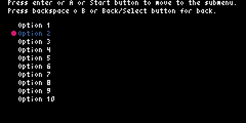

006: Submenu
Description
This is an example of how you can create several instances of PyxelMenu to create menus that interact with each other, one as the main menu and another as a submenu.

Code
# This is an example of how you can create several instances of PyxelMenu
# to create menus that interact with each other, one as the main menu
# and another as a submenu.
import pyxel
from pyxel_menu import PyxelMenu
class Example:
def __init__(self):
self.current_text = ''
self.current_pos = ''
menu_options = []
self.menu_in_use = 1 # 1: Main menu, 2: submenu
for i in range(1, 21):
menu_options.append(f'Option {i}')
self.menu = PyxelMenu(8, 22, menu_options, 10)
self.menu.set_cursor(color=8)
self.menu.set_highlight_color(5)
self.submenu = PyxelMenu(64, 22, limit=10)
self.submenu.set_cursor(cursor_type='triangle', color=10)
pyxel.init(240, 120, title='PyxelMenu Example 006: Submenu')
pyxel.run(self.update, self.draw)
def update(self):
if (
pyxel.btnp(pyxel.KEY_UP) or
pyxel.btnp(pyxel.GAMEPAD1_BUTTON_DPAD_UP)
):
if self.menu_in_use == 1:
self.menu.move_up()
else:
self.submenu.move_up()
elif (
pyxel.btnp(pyxel.KEY_DOWN) or pyxel.btnp(pyxel.GAMEPAD1_BUTTON_DPAD_DOWN)
):
if self.menu_in_use == 1:
self.menu.move_down()
else:
self.submenu.move_down()
elif (
(pyxel.btnp(pyxel.KEY_RETURN) or
pyxel.btnp(pyxel.GAMEPAD1_BUTTON_A) or
pyxel.btnp(pyxel.GAMEPAD1_BUTTON_START)) and
self.menu_in_use == 1
):
self.gen_submenu()
self.submenu.set_cursor_pos(0)
self.submenu.set_highlight_color(3)
self.menu.set_highlight_color(7)
self.menu_in_use = 2
elif (
(pyxel.btnp(pyxel.KEY_BACKSPACE) or
pyxel.btnp(pyxel.GAMEPAD1_BUTTON_B) or
pyxel.btnp(pyxel.GAMEPAD1_BUTTON_BACK)) and
self.menu_in_use == 2
):
self.submenu.set_highlight_color(7)
self.menu.set_highlight_color(5)
self.menu_in_use = 1
def draw(self):
pyxel.cls(0)
pyxel.text(8, 0, 'Press enter or A or Start button to move to the submenu.', 7)
pyxel.text(8, 8, 'Press backspace o B or Back/Select button for back.', 7)
self.menu.draw()
self.submenu.draw()
def gen_submenu(self):
submenu = []
for i in range(1, 21):
submenu.append(f'{self.menu.get_current_text()} - {i}')
self.submenu.set_options(submenu)
if __name__ == '__main__':
example = Example()